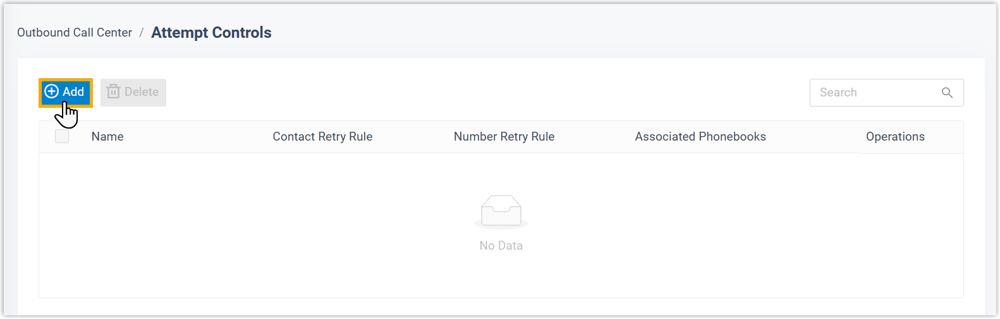
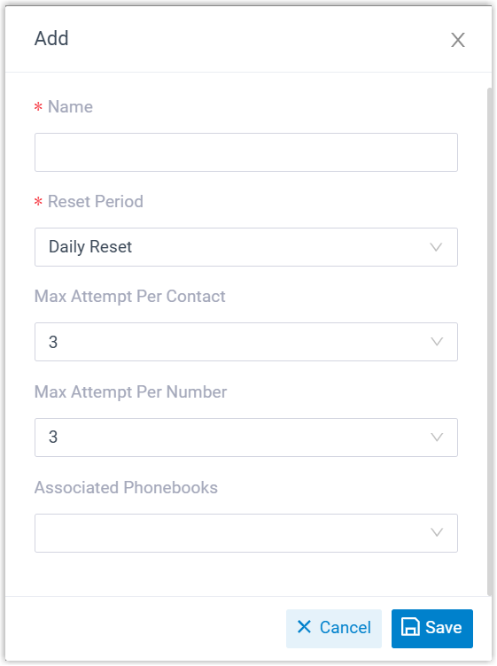

Configure an Attempt Control Rule
Attempt Controls allow you to restrict the number of call attempts to a contact or phone number, either within a specified period or in total, which helps you stay compliant with local regulations on outbound calling. This topic describes how to configure an attempt control rule.
Requirements and restrictions
- Requirements
- PBX's firmware version is 83.20.0.X or later.
- Restrictions
-
- A maximum number of 20 attempt control rules can be created.
- Attempt control rules only apply to campaigns with dial list
sourced from phonebooks.Note: To apply attempt control rules to campaigns with dial list sourced from CSV file, you MUST first import the contacts into a phonebook, and then create an attempt control rule to associate with that phonebook.
Procedure
- Log in to PBX web portal, go to .
- On the top of the list, click Add.

- In the pop-up window, configure the rule, then click
Save.

Setting Description Name Enter a name to help you identify the rule. Reset Period Set the reset period for call attempts. - Daily Reset: Reset attempt count at 00:00 every day based on the default time zone.
- Monthly Reset: Reset attempt count at 00:00 on the 1st day of each month based on the default time zone.
- Custom: Reset attempt
count after a custom countdown.
If you choose this option, enter a value between 1 and 999 in the Period(h) field. The countdown starts from the time of the first call attempt.
- Never Reset: Never reset attempt count.
Once the limit is reached, the system stops calling the contact or number.
Max Attempt Per Contact Set the maximum number of times each contact in the specified phonebooks can be dialed across all campaigns that use these phonebooks as the dial list.
Max Attempt Per Number Set the maximum number of times that the specified phone numbers in the specified phonebooks can be dialed across all campaigns that use the phonebooks as the dial list.
Note: Since attempt control rules apply only to outbound campaigns with dial list sourced from phonebooks, the system determines whether two numbers are considered identical based on the contact number matching rule configured in .- Do Not Match or Exact Match: Two numbers are regarded as identical only if they are exactly the same.
- Match the last {number} digits: Two numbers are regarded as identical if their last few digits match.
Associated Phonebooks Select phonebook(s) to which the attempt control rule will be applied.
Result
The attempt control rule is applied across all dialer campaigns that use the specified phonebooks as the dial list.